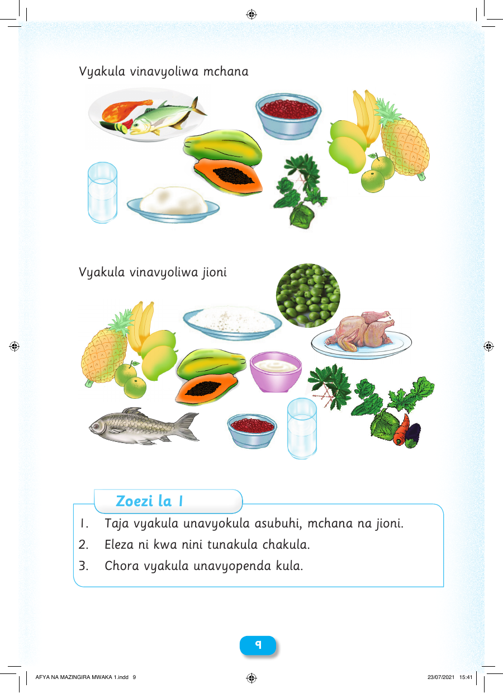

Vyakula vinavyoliwa mchana Vyakula vinavyoliwa jioni Zoezi la 1 1. Taja vyakula unavyokula asubuhi, mchana na jioni. 2. Eleza ni kwa nini tunakula chakula. 3. Chora vyakula unavyopenda kula. 99 AFYA NA MAZINGIRA MWAKA 1.indd 9 23/07/2021 15:41